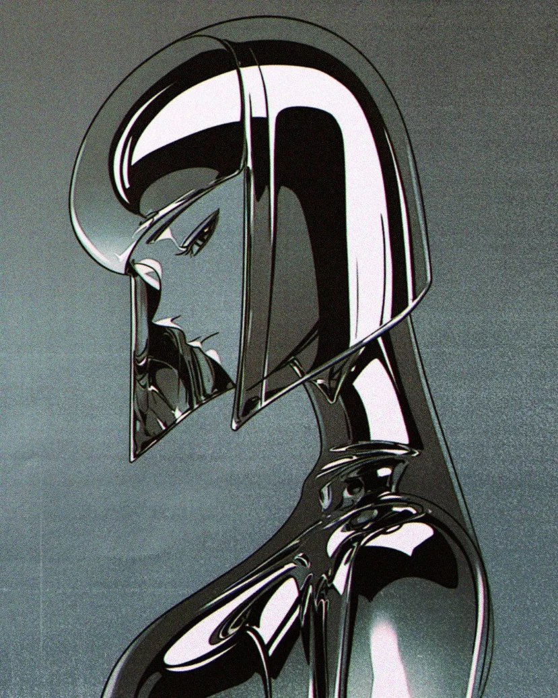

SUPPORT
Rio Chico Studio is a one-person, self-funded project — no studio, no publisher behind it. Just years of practice and a dream I’ve carried since I was a kid.
自主制作 / SELF-FUNDED
THE CARNIVALS PROJECT
Carnivals is my original, self-funded universe — the characters and stories running through this whole site. There’s no publisher and no studio behind it: just commissions, late nights, and one illustration at a time.
夢 / THE DREAM
A DREAM SINCE I WAS A KID
I’ve wanted to open my own illustration studio since I was little. That dream starts with you, not me — the client always comes first. The more this studio grows, the better I can serve every project you bring me next: faster turnarounds, deeper worlds, sharper work.
Per aspera ad astra — through hardship, to the stars.

ONE-TIME OR MONTHLY
KEEP THE STUDIO DRAWING
Every coffee helps fund tools, time and the Carnivals universe — original art posted here first.
SUPPORT ON KO-FI →